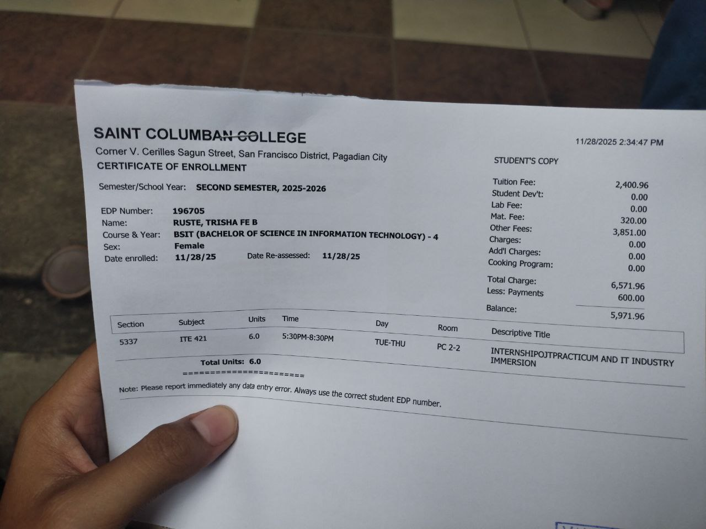
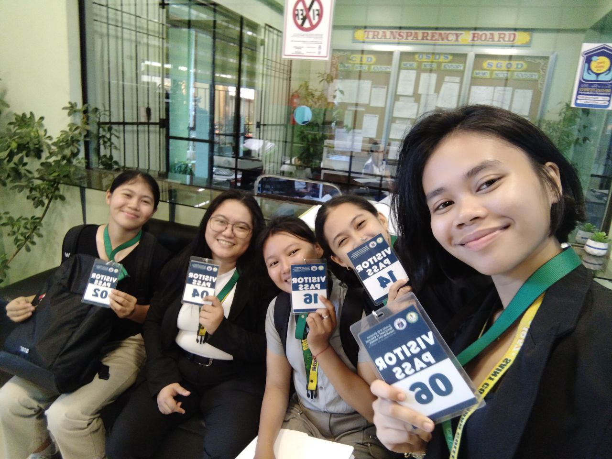
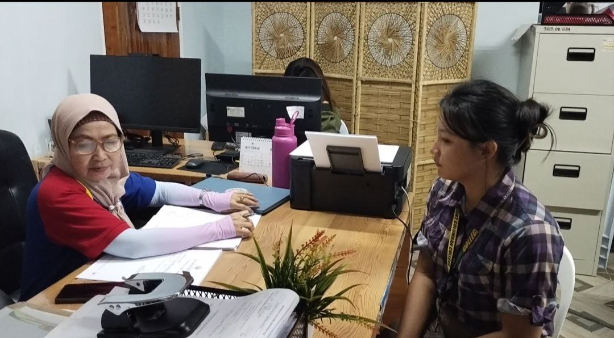
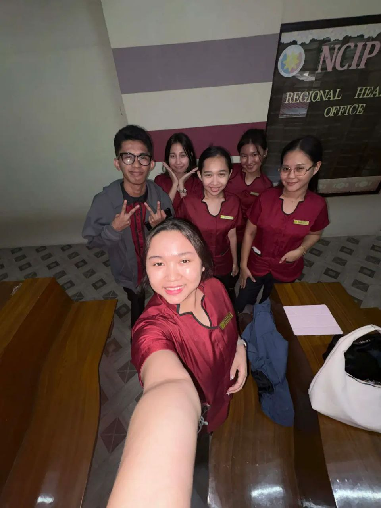

Enrollment form
All Posts


At that time, we went to the DepEd Elementary School Pilot School to submit our application letter for the OJT.

At that time, I went to the NCIP to apply for a job, and that was my first interview

release the endorsement form

First day duty and Observation

Day two duty